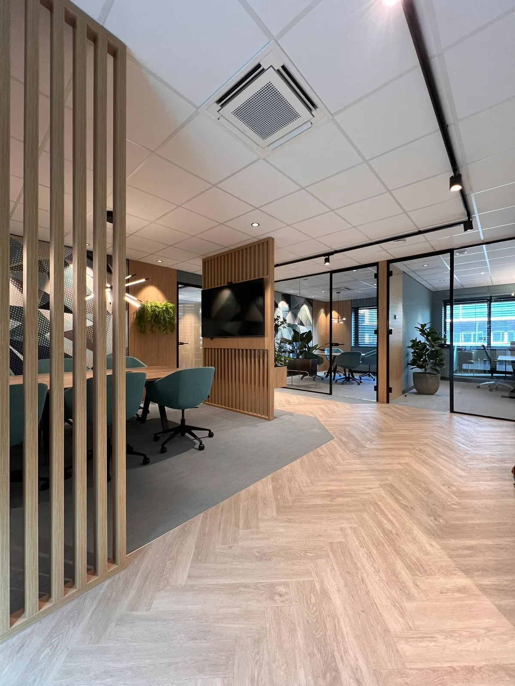
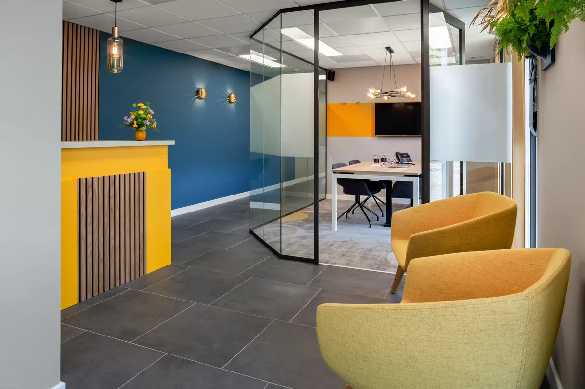
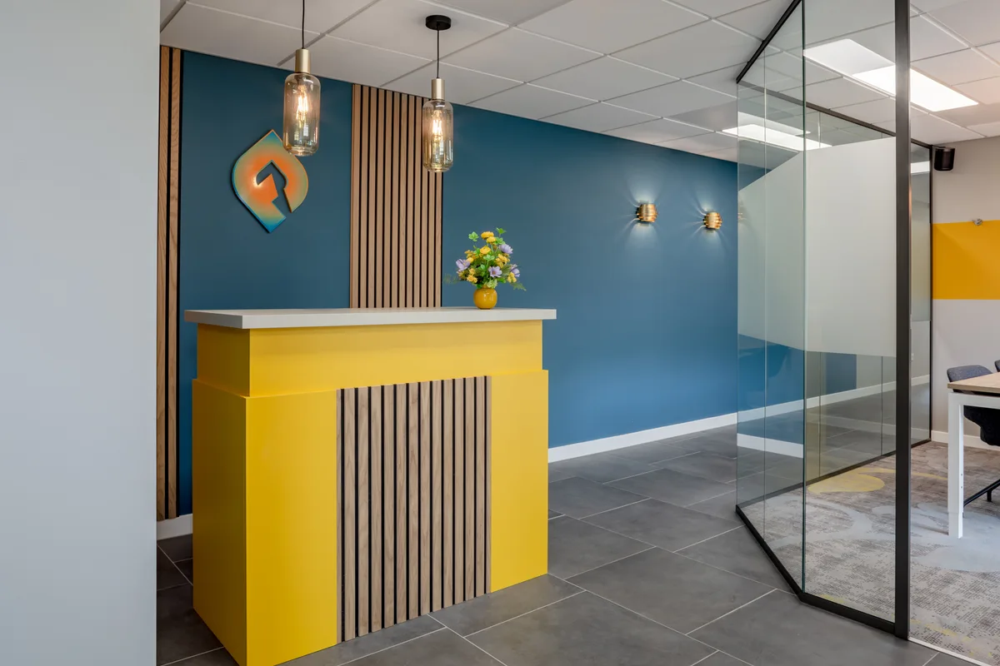
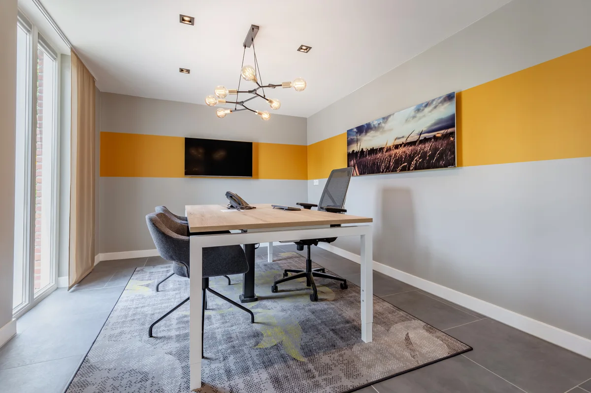
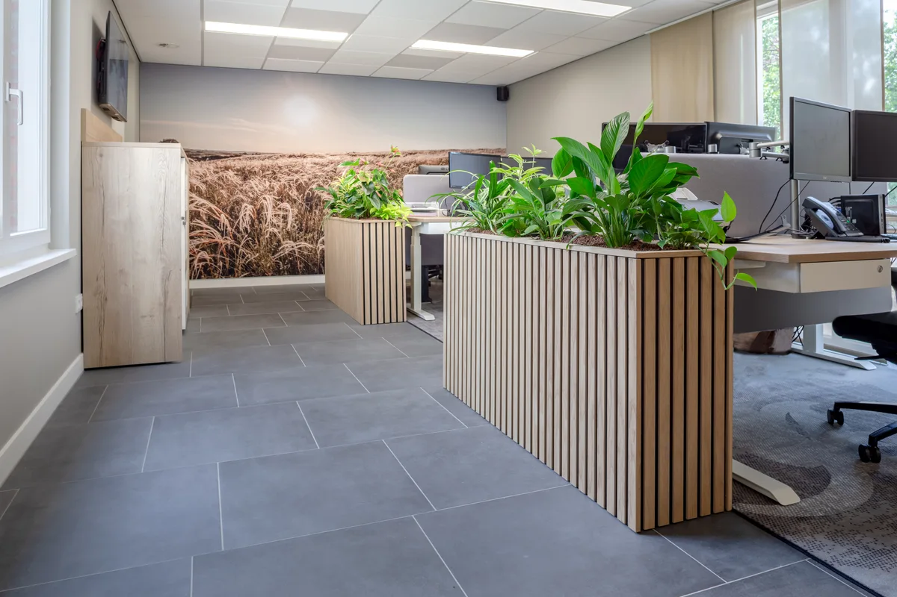
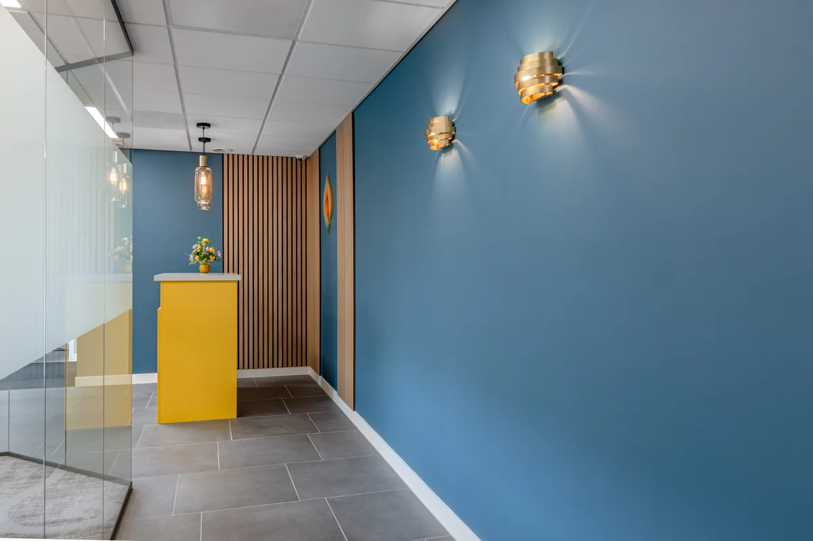

Concentreren
MACS
Er is te veel onrust en te weinig concentratie.
Bekijk project →Welkom heten

Klik op een foto om alle 5 beelden te bekijken.
De opgave
Het kantoor van Jacobs Verzekerd vertelde een ander verhaal dan het merk. Klanten kwamen binnen in een neutrale ruimte die weinig zei over de organisatie die ze bezochten. De vraag was om het merk voelbaar te maken, van de ontvangst tot de spreekkamers en werkplekken.
Er waren twee beperkingen. Het kantoor is 90 m² groot, en de indeling lag vast. Het verschil moest dus volledig uit het interieur komen: kleur, materiaal, licht en meubilair.
De aanpak
Het merk van Jacobs Verzekerd was het vertrekpunt. Dat vertaalde ik naar een samenhangend plan voor kleur, materiaal en inrichting. De ontvangst, de twee spreekkamers en de werkplekken heb ik ontworpen als één geheel. Elke zone heeft een eigen functie, maar dezelfde beeldtaal verbindt ze.
Met visualisaties maakte ik het ontwerp vooraf zichtbaar, zodat keuzes konden worden getoetst voordat er iets werd besteld. Daarnaast adviseerde ik over meubilair, verlichting en glazen wanden, zodat het ontwerp ook in de uitvoering overeind bleef.
Ontwerpkeuzes
Merkkleuren met een duidelijke rolverdeling. Blauw vormt de rustige basis. Geel en oranje komen alleen terug bij ontvangst en ontmoeting. Daardoor trekt de gele balie direct de aandacht en weet een bezoeker meteen waar hij moet zijn.

Materiaal en privacy
Hout als verbindend materiaal. Houten latten en houttinten keren terug in de balie, de wanden en de plantenbakken. Op een kleine oppervlakte voorkomt één doorlopend materiaal dat de ruimte versnipperd aanvoelt.
Glas tussen ontvangst en spreekkamers. De glazen wanden houden het kantoor open en licht. Matte stroken op zithoogte geven privacy tijdens gesprekken, wat bij financieel advies essentieel is.

Zonering en licht
Groen als zonering. Plantenbakken scheiden de bureaus van de looproute zonder een dichte wand. Zo hebben de medewerkers rust, terwijl het kantoor open blijft.
Verlichting met karakter. Hanglampen en wandverlichting geven de ontvangst en de spreekkamers een persoonlijke sfeer, die beter past bij een adviesgesprek dan algemene plafondverlichting.


Het resultaat
Wie binnenkomt, ziet direct bij wie hij is. De gele balie, de merkkleuren en het hout vertellen het verhaal voordat het eerste gesprek begint. De twee spreekkamers bieden privacy zonder afgesloten te voelen, en de werkplekken liggen rustig naast de looproute. Dat alles past binnen 90 m², zonder dat er één wand is verplaatst.
Verdieping
Een herkenbaar kantoor begint niet altijd bij een nieuwe plattegrond. Als de indeling vastligt, doen kleur, materiaal en licht het werk. Op een kleine oppervlakte is de verleiding groot om het merk overal te laten zien, maar dat werkt averechts: te veel kleur en te veel elementen maken een compacte ruimte onrustig. Effectiever is het om kleur gericht in te zetten op de plekken waar klanten komen, en de rest rustig te houden. Eén doorlopend materiaal zorgt voor samenhang, open scheidingen houden de ruimte licht. Zo voelt een kleiner kantoor niet krapper, maar juist bewuster ingericht.